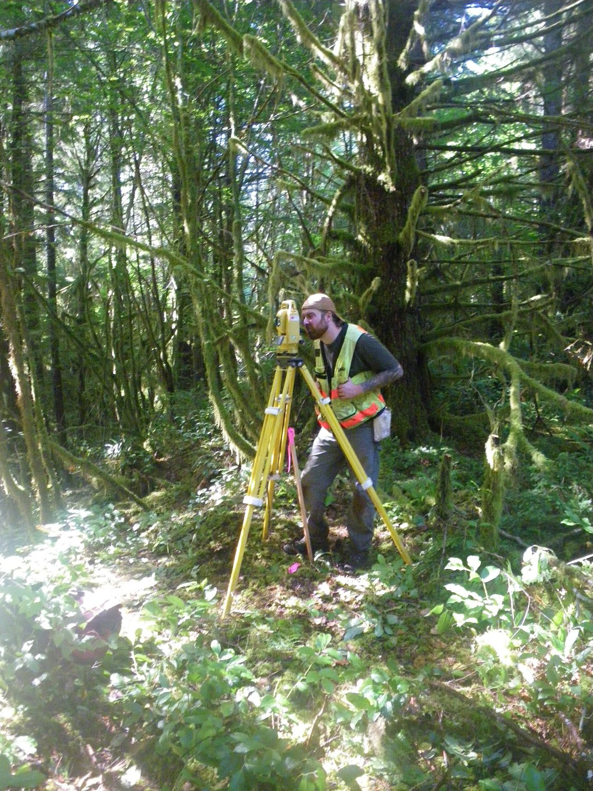

Read the whole
land file first.
For property developers and land acquisition teams. Plotmark reads title papers, survey plans and planning documents, then lists missing evidence and conflicting parcel details with page references.
 LAND CONTEXT / LICENSED AERIAL PHOTOGRAPHY
LAND CONTEXT / LICENSED AERIAL PHOTOGRAPHYSurvey schedule: 8.4 ha
Title schedule: 7.9 ha

0.5 hectares.
Two source passages.
One review question.
The prepared AI brief places both passages beside a 0.5-hectare discrepancy for professional review.
The Azure document-reading path
Every page checked.
Every open question cited.
AI compares land documents and survey references before an acquisition review. Choose a sample case and inspect the evidence behind the finding.
The source material
Parcel reference PM-501. The survey schedule gives an area of 8.4 hectares. Access is shown along the eastern boundary.
Evidence is prepared for this demonstration. Use the source reference to check the finding.The review brief
Run the sample.
Then inspect the finding.
See how the source becomes a specific question, a cited observation and a next action.
378,000
document pages per month in the stated deployment scenario.
60 organizations × 35 parcel files per team / month × 1 review per changed file × 180 pages per parcel file.
Planning scenario. This is an estimate, not measured customer traffic or Azure consumption.Put the workflow
in front of your team.
It prepares a due-diligence brief. It does not confirm ownership, verify a registry entry or replace a lawyer or licensed surveyor.